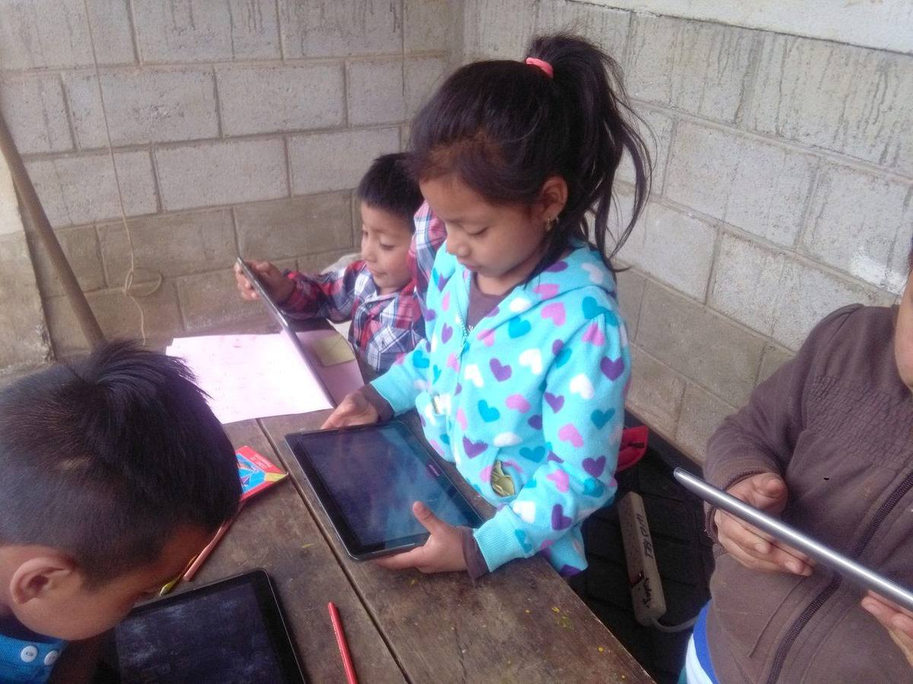
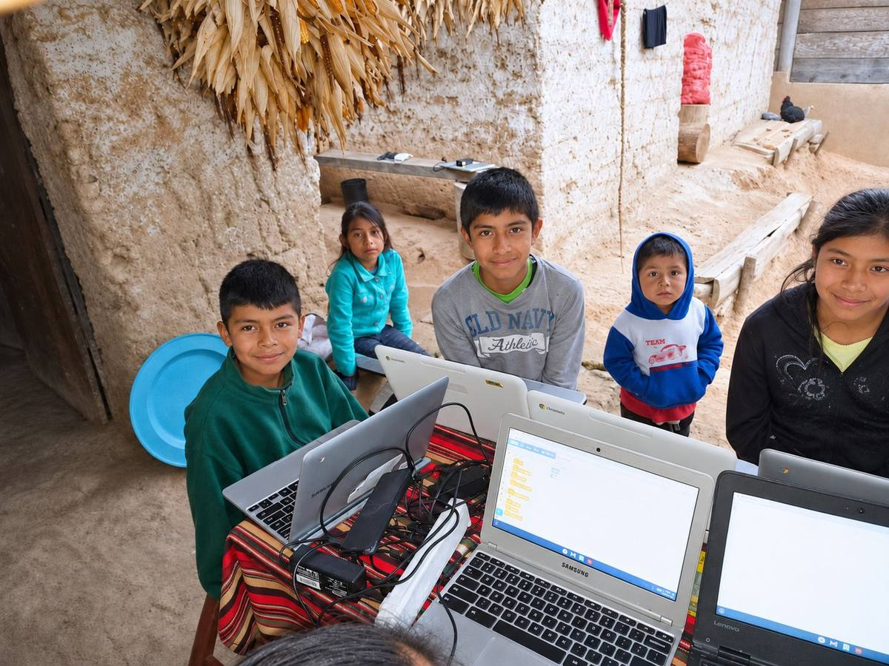

Club Extra
534 niños inscritos en 2026
Grupos de aprendizaje en la propia comunidad, con actividades educativas y tecnológicas basadas en el Método CREA+.
Conoce el programaTotonicapán, Guatemala· acompañando a la niñez del altiplano desde 1952

Una beca para quedarse en la escuela, de preprimaria a la universidad.

Las becas permiten que niñas, niños y jóvenes sigan estudiando desde preprimaria hasta la universidad o un curso técnico.
De preprimaria a básico estudian en el Colegio Evangélico Metodista Juan Wesley y en el Colegio Evangélico Metodista Esmirna. Después de tercero básico, las becas acompañan el diversificado, INTECAP y la universidad.
57 de los 64 becados de colegio también asisten a Club Extra, y muchos sirven como voluntarios.
Las becas se otorgan mediante procesos de selección responsables y transparentes, para acompañar a familias con verdaderas necesidades y un firme compromiso con la educación de sus hijos. A cambio pedimos tres compromisos:
| Nivel | J. Wesley | Esmirna | Total |
|---|---|---|---|
| Preprimaria | 0 | 5 | 5 |
| Primaria | 11 | 19 | 30 |
| Básico | 15 | 14 | 29 |
| Total | 26 | 38 | 64 |
| Becados de diversificado | 11 |
| Becados de universidad | 4 |
| Becado en INTECAP | 1 |
| Futuros graduados universitarios | 5 |
| Nivel | 2023 | 2024 | 2025 | 2026 |
|---|---|---|---|---|
| Tercero básico | 3 | 10 | 11 | 10 |
| Diversificado | 0 | 0 | 1 | 7 |

En 2015 la hija mayor de don Eric recibió una beca para cursar básico. Hoy es licenciada en Psicología, y sus tres hermanos siguieron el mismo camino.
Leer la historia534 niños inscritos en 2026
Grupos de aprendizaje en la propia comunidad, con actividades educativas y tecnológicas basadas en el Método CREA+.
Conoce el programa
232 equipos entregados en 2026
Equipos de trabajo, antenas de internet y la plataforma Chispa para seguir aprendiendo también en la aldea.
Conoce el programa
14 jóvenes completaron el programa
Retos empresariales durante 16 semanas para que cada joven dé el paso final hacia la universidad.
Conoce el programa
17 jóvenes sirviendo cada semana
Quien empieza como participante se convierte en voluntario y después en facilitador: liderazgo que se aprende sirviendo.
Conoce el programa
Conoce el impacto de tu apoyo, dona hoy o súmate como voluntario. Cada decisión cuenta.